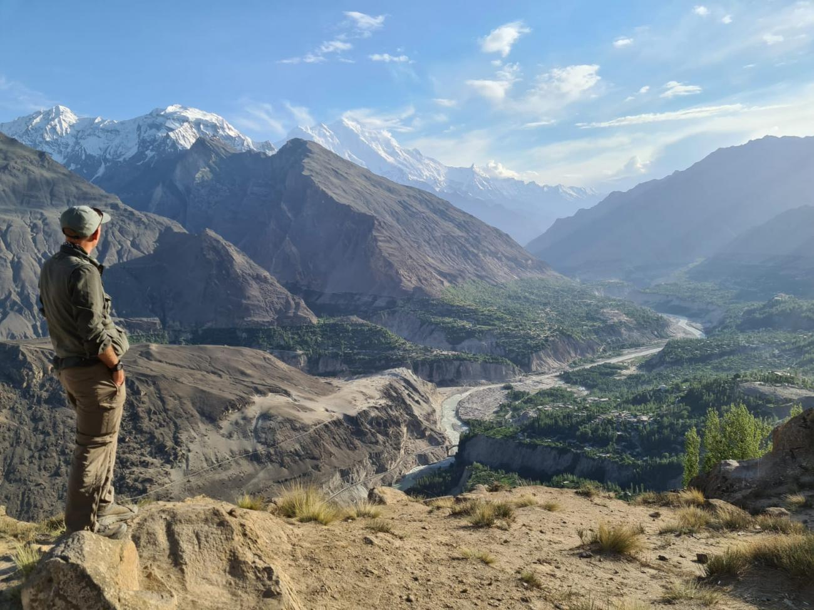

7-Day Northern Highlights (Hunza + Naran)
- Day 1: Islamabad → Naran (7–9 hrs via Hazara). River Kunhar.
- Day 2: Naran → Babusar Top (seasonal) → Hunza (6–8 hrs). Eagle’s Nest.
- Day 3: Attabad Lake boats + Hussaini Bridge + Passu Cones.
- Day 4: Baltit & Altit Forts; apricot dishes in Karimabad.
- Day 5: Khunjerab Pass (if open) or Hopper Glacier.
- Day 6: Return to Naran. Lake Saif‑ul‑Mulook jeep trip.
- Day 7: Naran → Islamabad (8–10 hrs). Buffer day.
Season: Jun–Sep • Notes: Layers; fast‑changing conditions.